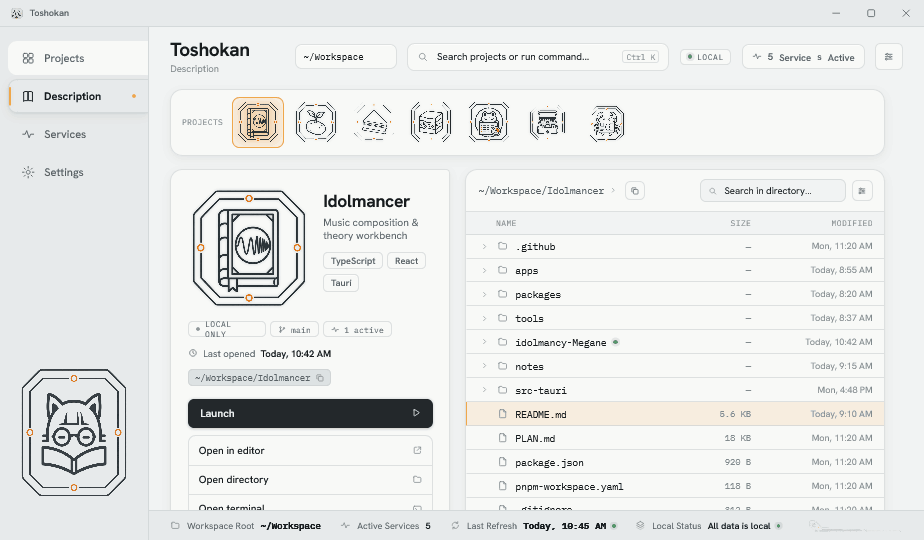
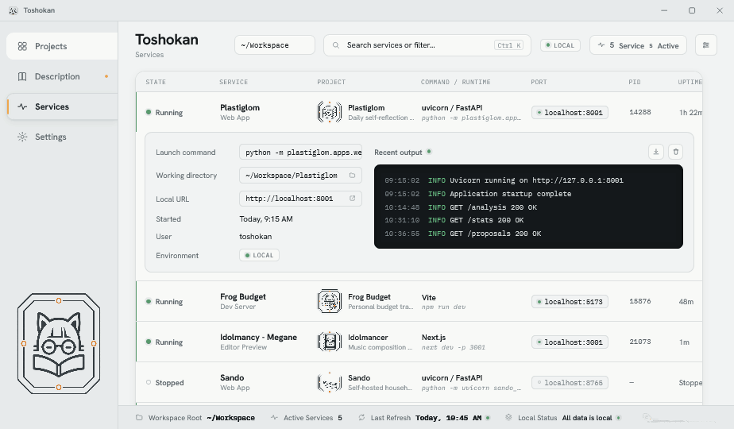
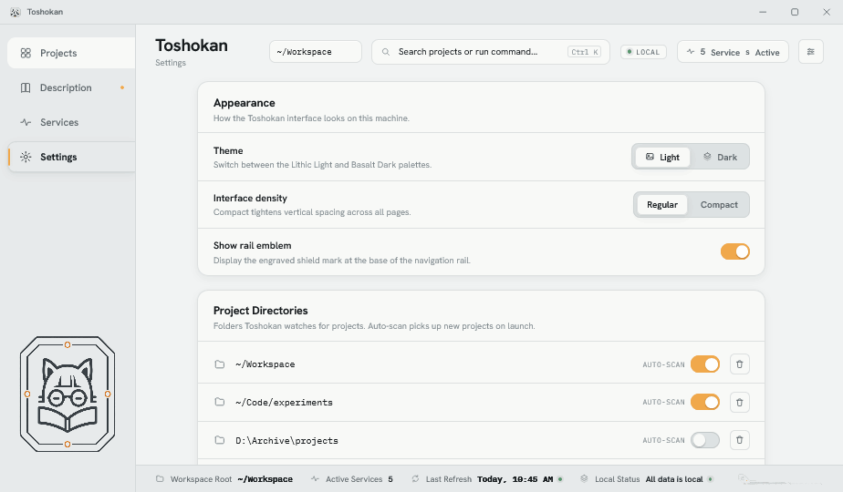

|
Development & Implementation Guide
ToshokanA local-first launcher for a sprawling workspace — interface spec & backend planThis document is the single source of truth for building Toshokan beyond its interface prototype. It explains what the product is and why, documents every screen and component of the existing UI, codifies the “Digital Strata” design system, and lays out a phased plan — with concrete IPC contracts and data schemas — for implementing the local Tauri backend that brings it to life. How to read this document The files in the prototype bundle are design references built in HTML/React — a high-fidelity mock of the intended look and behavior, not production code to ship. The task is to recreate this interface inside a Tauri application and build the local backend described in Part IV. Recreate the UI faithfully (the design is hi-fi: final colors, type, spacing, and interactions are specified here), using the target project’s own component conventions where they exist. Throughout, coloured callouts flag the kind of information:
Status tags label features: Prototyped rendered & interactive in the mock · Stubbed visible but wired to fake data/toasts · Backend needed requires real OS/process/file work. ·ContentsPart IProduct
Part I — Product 01Overview & goalsToshokan (図書館, “library”) is a local-first desktop launcher and control room for a developer’s personal workspace — the one place to find, understand, launch, and monitor every project on the machine. The problemA working developer accumulates many independent local projects — apps, daemons, experiments — each with its own stack, run command, dev server, notes, and git state. They sprawl across folders. Knowing what exists, what’s running, how to start a thing, and where its docs live means juggling a file explorer, several terminals, a notes app, and memory. Toshokan collapses that into a single, calm, native window. Goals
Design intent — “a library, not a dashboard” The product is framed as a reference library of specimens, not an ops dashboard. Projects are catalogued and inspected like mineral samples (hence the octagonal “specimen frames,” the “cross-section” directory view, and the geological palette). This framing should survive into the real app: calm, archival, tactile — never busy or alarmist. Non-goals
Platform & stackDecision — Tauri is assumed The prototype’s Windows chrome, the Part I — Product 02Core concepts (domain model)Six entities make up Toshokan’s mental model. The prototype’s sample data in
Workspace Directory ──scans──▶ Project ──has 0..n──▶ Service
Project ──has 0..n──▶ Subproject (a nested Project) Project ──links 0..1──▶ Summary Note (Obsidian markdown)
Project shape (from
|
| Token | Lithic Light | Basalt Dark | Role |
|---|---|---|---|
| --bg-base | #F1F3F3 | #0D1012 | App background |
| --bg-substrate | #E7EAEB | #12171A | Rail, header, footer, recessed bands |
| --surface | #F8F9F7 | #181E21 | Cards, tiles, panels |
| --surface-recessed | #DDE2E3 | #11161A | Insets, hover wells, segmented track |
| --line | #C1C8CA | #354046 | Solid hairlines, dashed slot borders |
| --line-soft | rgba(193,200,202,.5) | rgba(53,64,70,.6) | Most borders & dividers |
| --text-primary | #171B1D | #EEF1F1 | Headings, key values |
| --text-secondary | #596268 | #ABB4B8 | Body, labels |
| --text-muted | #818B90 | #778288 | Meta, timestamps, placeholders |
| --signal | #F0A84B | #FFB45A | Selection, focus, “signal” accent (amber) |
| --running | #57976C | #69C184 | Running / healthy state (green) |
| --warning | #C47D38 | #E29A49 | High memory, caution |
| --error | #A85348 | #D5685B | Failed state, destructive |
| --copper | #709B93 | #7AB2A6 | Documentation “seam,” secondary accent |
| --slate | #87949A | #718087 | Directory icons, neutral nodes |
| --quartz | #C7C1D7 | #A9A2C5 | Tertiary accent (violet-grey) |
| --basalt | #23282B | #2C353A | Primary button fill, toast, console |
Typography
.micro technical micro-labels.| Role | Family | Size / weight | Notes |
|---|---|---|---|
| Page title (H1 in header) | Sans | 25px / 700 | letter-spacing −0.02em |
| Section / card heading | Sans | 23–16.5px / 700 | tight tracking |
| Tile / row title | Sans | 16.5–14px / 700 | — |
| Body & descriptions | Sans | 13.5–14px / 400–500 | text-wrap:pretty |
Micro-label (.micro) | Mono | 10px / 500 | uppercase, letter-spacing 0.08em, muted |
| Paths, ports, commands, logs | Mono | 11–12.5px / 400 | commands rendered italic |
Geometry, elevation & texture
| Token | Value | Used for |
|---|---|---|
| --r-panel | 16px | Large panels, cards, sections |
| --r-tile | 14px | Project tiles (top-right corner clipped to 4px — the “specimen cut”) |
| --r-control | 8px | Buttons, inputs, selects |
| --r-chip | 6px | Chips, pills, tags |
| --shadow-tile | 2-layer, ~6% ink | Resting cards |
| --shadow-raised | 2-layer, ~9% ink | Hover / selected cards |
| --shadow-chip | inset 0 1px 0 white/65% | Top-edge highlight on chips (the “polished stone” sheen) |
| --placeholder-stripe | −45° repeating lines | Asset-slot fill (see §4) |
Design intent — the “specimen cut” & exposed seams
Two recurring motifs carry the geology metaphor: project cards clip their top-right corner to a hard 4px radius (a cut facet on an otherwise rounded tile), and documentation panels expose a thin copper “seam” gradient along their top edge. Both are quiet — easy to miss, but they make the surface feel cut and layered rather than flat. Keep them.
Part II — Design system
04Components, iconography & motion
Shared primitives live in toshokan/shared.jsx. Recreate them as the component library; every screen is assembled from these.
Shared component inventory
| Component | Purpose & key props |
|---|---|
| Icon | Geometric line icon on a 24px grid. name, size=16, stroke=1.75. ~30 icons (see below). |
| Node | The “mineral node” status dot. state (running/starting/stopped/failed/signal/neutral), size, pulse. Stopped renders hollow; running/starting get a soft halo ring. |
| SpecimenFrame | Octagonal project-icon holder. size, label, selected. Renders the project’s artwork via blend-mode (see intent below); falls back to a striped octagon placeholder when no art is mapped. |
| BrandMark | Toshokan app logo (fox-with-book), light/dark variants. |
| Slot | Dashed, striped placeholder for an unfinished asset. Tagged data-asset-slot="…" for discovery. |
| TechChip / PathChip / StatusChip | Text-only stack tag · mono path (optionally copyable) · mono uppercase status label with a leading Node. |
| PrimaryBtn / SecondaryBtn / IconBtn | Basalt-filled primary (lifts on hover), hairline secondary, square icon button (supports active + disabled). |
| Toast | Transient bottom-centre basalt pill with a signal node. Auto-dismiss ~2.4s. |
Iconography
A single hand-built set, all on a 24px grid, fill:none; stroke:currentColor; stroke-width≈1.75; round caps/joins. Names available: grid, rows, folder, file, image, pulse, search, sliders, play, stop, restart, dots, chevR, chevD, external, terminal, book, branch, copy, clock, refresh, layers, download, trash, collapse, plus, gear. Keep them geometric and uniform-weight — no filled or duotone icons.
State system — the “mineral node”
| State | Node | Where |
|---|---|---|
| running | Solid green + soft halo | Healthy service / project with a live service |
| starting | Solid amber + halo, pulsing | Service spinning up; rows also show a sweeping top line |
| stopped | Hollow ring (line colour) | Configured but not running |
| failed | Solid red | Exited non-zero; row gets a red left-edge + error banner |
Motion
- Hover lifts — cards/tiles translateY(−2px) with a shadow swap, ~150ms ease.
- Pulse (
tsk-pulse, 2.2s) — opacity breathing on starting/active nodes. - Starting sweep (
tsk-starting-sweep, 1.8s linear) — an amber gradient slides across the top of a starting service row. - Theme flip — on theme change the app adds
.tsk-theme-switchingfor ~80ms which setstransition:noneeverywhere, so all surfaces snap to the new palette atomically (a half-finished cross-fade reads as a bug). Reproduce this. - Reduced motion —
@media (prefers-reduced-motion: reduce)disables all animation/transition. Required.
Design intent — icons rendered with blend modes, not backplates
Project & brand artwork render with mix-blend-mode: multiply (light theme) / screen (dark theme) over an octagonal frame. This lets the glass “plaque” adopt whatever surface sits beneath it — including the amber tint of a selected card — so an icon reads as engraved into the stone rather than pasted on as a white square. There is intentionally no separate selected/unselected icon backplate; selection adds a signal-coloured drop-shadow glow instead. Preserve the blend approach when wiring real icons.
Asset pipeline
Icons are 512px masters at toshokan/assets/icon-<id>.png with -dark variants generated by a saturation-gated lightness inversion (neutral plaque/strokes invert for dark mode; saturated art keeps its hue). The full manifest, sizes, and remaining gaps are in toshokan/ASSETS.md — summarised in §18.
Part III — Interface
05Shell & global chrome
A fixed full-height frame wraps four interchangeable pages. From top to bottom: title bar, then a row of [navigation rail | (context header · page · status strip)]. The shell lives in toshokan/app.jsx.
5.1 Title bar Stubbed
A 36px Windows-11 caption bar: brand mark + “Toshokan” at left, and minimize / maximize / close buttons at right (close hovers to #C42B1C). It is a faithful mock of OS chrome.
Backend gap — use the real window
Do not ship the painted caption buttons. Use Tauri’s window decorations, or a custom titlebar wired to appWindow.minimize() / toggleMaximize() / close() with a data-tauri-drag-region drag zone. The brand mark + title can stay as a custom titlebar if the team wants the look.
5.2 Navigation rail Prototyped
196px fixed left column on the substrate. Four tabs — Projects (grid icon), Description (book), Services (pulse), Settings (gear). The active tab becomes a raised surface tab with rounded left corners, a bold label, and an amber illuminated seam marker down its left edge. Description shows a small signal node badge when a project is selected. At the rail’s base sits the engraved shield emblem (toggleable; see Settings).
5.3 Context header Prototyped parts stubbed
- Page title “Toshokan” + a contextual subtitle (“Project Catalog,” “Description,” “Services,” “Settings”).
- Workspace-root selector — a
<select>over~/Workspace/~/Experiments/~/Archive. Stubbed — should list the user’s registered directories (§9) and re-scope the catalog. - Search / command field — placeholder adapts per page (“Search projects or run command…” vs. “…services or filter…”). Focused with Ctrl+K. Currently filters the visible list; the “run command” half is aspirational (a command palette — see §14, Phase 4).
- Local status chip, “N Services Active” button (jumps to Services), and a sliders icon button.
5.4 Status strip Prototyped
A 1-line footer on the substrate: Workspace Root · Active Services · Last Refresh · “All data is local.” Values are live where they can be (active-service count is derived from state); Last Refresh is static and should reflect the last scan time.
5.5 Global behavior
| Shortcut / event | Behavior |
|---|---|
| Ctrl/⌘+K | Focus the search field |
| Ctrl+1…4 | Switch to Projects / Description / Services / Settings |
| Toast | Transient confirmation for actions; auto-dismiss ~2.4s. Many actions currently only raise a toast (“… — wiring pending backend”). |
| Theme / density / emblem | Held in app state via a tweaks hook; persisted to localStorage in the prototype. Production should persist to the config file (§12.8). |
Part III — Interface
06Projects — the catalog
The home screen. A featured “launch band” for the current selection, then the full catalog as a card grid or a dense list. Source: toshokan/page-projects.jsx.
6.1 Recent / Selected band
A wide panel pinned above the grid (hidden while a search query is active). Four columns: project identity (badge “Recent”/“Selected,” name, description, tech chips + path) · the project’s live services (up to 3, with state nodes and ports — “what’s running before you launch”) · last-opened · and a Launch primary + Open Folder secondary. It follows the current selection, falling back to the most-recent project.
6.2 Specimen tile (grid)
The catalog’s unit. Anatomy, top to bottom:
- Corner state node (top-right) — running/starting/failed, or a signal dot when selected.
- SpecimenFrame (84px) + name + one-line description.
- Tech chips, then the path chip.
- Optional headline service strip (green well, label, URL) when
project.serviceexists. - Optional subprojects well — count badge + each subproject with a launch button.
- Footer (separated by a stratum line, with a faint gradient): last-opened + launch + “more” buttons.
Selection = amber border + raised shadow + soft outline. Hover lifts the tile. Single-click selects; double-click / Enter opens the Description page.
6.3 List view
Toggled by the grid/rows control. A 6-column row: 44px specimen · name (+ inline state node) · description · path · last-opened · launch/more. Selected rows get the amber left-border + soft fill.
6.4 Controls & states
- Sort: “Last opened” (by
sortKey) or “Name.” - View toggle: grid ⇄ list (local UI state).
- Search: filters by name, description, path, or tech tag; shows a “Results / N” heading and a styled empty state when nothing matches.
Backend gaps — Projects
- Project list is the static
TSK_PROJECTSarray → replace with a real directory scan (§13.1). - Launch (band, tile, subproject) only toasts → must spawn the project’s default service / run command (§13.5).
- Open Folder only toasts → open the OS file manager at
project.path(§13.7). - Per-project running state is derived from the (live, but locally-simulated) services array → derive from the real service supervisor.
- “More actions” (the dots menu) has no menu yet → define actions (open in editor/terminal, copy path, reveal, rescan).
Part III — Interface
07Description — project detail
A deep view of one project: identity & actions, its linked note, subprojects, and a directory “cross-section” with file previews. Source: toshokan/page-project.jsx. Empty state prompts the user to pick a project.

7.1 Specimen tray
A horizontal rail of every project’s octagonal icon — click to switch the detail view. The current project is ringed in amber.
7.2 Identity card
160px specimen + name + description + tech chips; a row of meta chips (repo state, git branch, “N active” services); last-opened; a copyable path chip; a full-width Launch; and an action list: Open in editor · Open directory · Open terminal · View notes.
7.3 Summary panel Stubbed
The project’s linked note (README or Obsidian), shown read-only with an exposed copper seam, the source label (“Obsidian”), paragraphs, an “updated” timestamp, and Open in Notes. A clean empty state appears when no note is linked.
7.4 Subprojects panel
Lists nested projects with their own specimen, description, last-opened, and launch/more buttons. Hidden when there are none.
7.5 Directory cross-section sample data
A file tree with breadcrumb + in-directory search: expand/collapse folders, columns for Name / Size / Modified, mono filenames, folder vs. file vs. image icons, and a running-node marker on a directory that hosts a live service. Selecting a file drives the preview panel.
7.6 File preview sample data
Header (filename, kind, size, modified) over a mono code block, with “Open in editor.” Falls back to “No preview available.”
Backend gaps — Description
- The tree & previews are sample data for Idolmancer only (
TSK_TREE,TSK_FILE_PREVIEWS); other projects show a “directory index pending” placeholder. Real builds read the live filesystem on demand (§13.4), lazily expanding directories and reading file heads for preview. - Summary must resolve a project’s README and/or matching Obsidian note and render markdown (§13.3).
- All four action rows + Open in Notes currently toast → real editor/terminal/folder/notes launches (§13.7).
- repo / branch chips are static strings → real git read (§13.2).
Part III — Interface
08Services — the control room
The operational heart of the app: a table of every configured service across all projects, with live state and an expandable detail drawer. Source: toshokan/page-services.jsx. This is where the most backend work lives.

8.1 The table
Columns: State (node + label) · Service (name + role) · Project (specimen + name + desc) · Command / Runtime (runtime + italic mono command) · Port (chip with live node) · PID · Uptime · Memory (value + usage bar) · Actions.
8.2 Row treatments by state
- running — green left-edge; memory bar green (amber/
--warningwhen ≥350 MB of a 512 MB reference cap). - starting — amber left-edge + an animated sweep line across the top; “Starting…” in place of uptime.
- stopped — no accent; dashes for port/pid/uptime/memory.
- failed — red left-edge + an inline error banner (code, message, time) with a “View Logs” button that force-opens the drawer.
8.3 Expanded detail drawer
A two-column inset: left = launch command (copyable), working directory, local URL (openable), started, user, environment chip; right = Recent output — a dark log console with severity colouring (green/blue/amber/red) and save/clear-log buttons.
8.4 Actions & behavior
Per row: Open-in-browser (running only), Start ▸ / Stop ◼ (Stop disabled while starting), Restart (running/failed), and “more.” In the prototype these mutate local state on timers — start → “starting” for ~2.6s → “running” with a random PID & memory; restart likewise; stop clears runtime fields. A seeded service also auto-promotes from “starting” to “running” after ~9s to demonstrate the animation.
Backend gaps — Services (the core build)
- Start / Stop / Restart must spawn & signal real OS processes and track them — replacing the timer simulation (§13.5).
- State, PID, port, uptime, memory must be sampled from the live process, pushed to the UI continuously (§13.5–13.6).
- Log console must stream real stdout/stderr (with severity parsing) via events; Save/Clear must act on the real buffer (§13.6).
- Open in browser → open the service’s URL in the default browser (§13.7).
- Service definitions come from project config (e.g.
toshokan.yml) — discovered, not hard-coded (§13.2).
Part III — Interface
09Settings
Interface preferences, watched directories, and project-management defaults. Source: toshokan/page-settings.jsx. Custom controls: a sliding Switch, a segmented Segment, and a styled Select.

| Group | Controls | Status |
|---|---|---|
| Appearance | Theme (Light/Dark) · Interface density (Regular/Compact) · Show rail emblem | Prototyped live |
| Project Directories | List of watched roots with per-row auto-scan toggle + remove; add-directory input | Stubbed local-only |
| Project Management | Default editor · default terminal · branch to display · restore last session · re-scan on launch · confirm before stopping services | Stubbed local-only |
| About | Brand mark, “Version 0.4.0 · All data is stored locally,” Documentation button | static |
Backend gaps — Settings
Appearance tweaks persist to localStorage; everything else is component-local React state that evaporates on reload. All of it must move to a persisted config file (§12.8), and the directory list must actually drive scanning (§13.1). “Confirm before stopping,” “restore last session,” and “re-scan on launch” must gate the corresponding real behaviors. “Default editor/terminal” feed the launch actions (§13.7).
Part III — Interface
10Prototype vs. backend — the gap map
A single table of every faked behavior and the backend capability that must replace it. The capability IDs (C1–C8) are specified in §13.
| UI action / value | Prototype does… | Real backend must… | Cap. |
|---|---|---|---|
| Project catalog | Static TSK_PROJECTS | Scan workspace dirs, build project list | C1 |
| Tech tags · branch · repo | Hard-coded strings | Detect stack; read git HEAD & remote | C2 |
| Summary / README note | Inline paragraphs | Resolve README/Obsidian note; render markdown | C3 |
| Directory tree & file preview | Sample data (Idolmancer only) | Read FS lazily; read file heads | C4 |
| Launch / Start / Stop / Restart | Toasts + timer state changes | Spawn/signal real processes; supervise | C5 |
| PID · port · uptime · memory · state | Random / seeded values | Sample live processes; push updates | C5 |
| Service log console | Static lines | Stream stdout/stderr via events | C6 |
| Open editor / terminal / folder / browser / notes | Toasts | Launch external apps / reveal paths / open URLs | C7 |
| Workspace-root selector & “Last Refresh” | Static | Reflect registered roots + last scan time | C1 |
| All Settings except appearance | Local React state | Persist to config; drive behavior | C8 |
Part IV — Backend plan
11Architecture (Tauri)
A thin React webview over a Rust core. The UI never touches the OS directly — it invoke()s typed commands and listen()s for pushed events. All filesystem, git, and process work happens in Rust.
11.1 Topology
│ invoke(cmd, args) ──▶ ┌──────────────────────────┐
│ ◀── listen(event) │ Rust core (Tauri) │
Tauri IPC bridge │ · scanner · git │
│ · supervisor · fs │
OS : filesystem · processes · git · shell ◀─▶ └──────────────────────────┘
11.2 Rust modules
Project records.toshokan.yml/package.json parse, git branch/remote, README/notes resolution.11.3 Concurrency & events
Use Tokio. Long operations (scan, spawn, sampling) are async and must never block the UI thread. The supervisor runs a sampling loop (~1–2s) that emits status snapshots; the logbus emits as output arrives (debounced/batched). Shared runtime state lives behind Tauri managed state (e.g. Arc<Mutex<Supervisor>>).
| Event channel | Payload | Consumer |
|---|---|---|
| service://status | ServiceStatusUpdate (id, state, pid, port, uptimeSec, ramMb) | Services table, project state nodes, header count |
| service://log | LogLine (serviceId, ts, severity, text) | Expanded log console |
| scan://progress | ScanProgress (root, found, done) | Status strip “Last Refresh,” catalog refresh |
11.4 Frontend integration
The prototype loads globals from data.js and renders via Babel-in-browser. For production:
- Compile the React tree with Vite + TypeScript; drop the in-browser Babel and CDN React tags.
- Replace
window.TSK_*globals with an async data layer (src/ipc/*.ts) wrappinginvoke(), returning the exact shapes in §12 so components are largely untouched. - Subscribe to events with
listen()inside effects; map snapshots into the existing services state (the prototype already models services as React state, so the diff is small). - Keep
data.jsas a fixtures module behind aUSE_FIXTURESflag for Storybook/visual QA and offline UI work.
// src/ipc/projects.ts — the data layer the UI calls instead of window.TSK_PROJECTS
import { invoke } from "@tauri-apps/api/core";
import { listen } from "@tauri-apps/api/event";
export const listProjects = () => invoke<Project[]>("list_projects");
export const rescan = (root?: string) => invoke<void>("rescan", { root });
export function onServiceStatus(cb: (u: ServiceStatusUpdate) => void) {
return listen<ServiceStatusUpdate>("service://status", e => cb(e.payload));
}Part IV — Backend plan
12Data model & persistence
TypeScript interfaces the IPC layer returns (mirror them as Rust structs with #[derive(Serialize, Deserialize)] and camelCase rename). These match the prototype’s data shapes exactly.
interface Project {
id: string; name: string; desc: string;
tech: string[]; path: string;
lastOpened: string; lastOpenedAt: number; // humanised + raw epoch (for sort)
sortKey: number;
branch: string; repo: string; serviceCount: number;
subprojects: Subproject[];
service?: { label: string; url: string };
summary?: Summary;
}
interface Subproject { name: string; desc: string; lastOpened: string; path?: string; }
interface Summary { source: string; updated: string; paragraphs: string[]; markdown?: string; }
type ServiceState = "running" | "starting" | "stopped" | "failed";
interface Service {
id: string; name: string; role: string;
projectId: string; projectName: string; projectDesc: string;
runtime: string; command: string;
port: string | null; pid: string | null;
uptime: string | null; ram: number | null; // MB
status: ServiceState;
error?: { code: string; message: string; time: string };
detail: {
launchCommand: string; workingDir: string; localUrl: string | null;
started: string; user: string; environment: string;
log: LogLine[];
};
}
interface LogLine { ts: string; severity: "info"|"ok"|"warn"|"error"|"plain"; text: string; }
interface TreeNode {
name: string; type: "dir" | "file"; modified: string;
size?: string; kind?: string; running?: boolean; children?: TreeNode[];
}
interface FilePreview { kind: string; size: string; modified: string; lines: string[]; }Note: the prototype’s log lines are coloured token tuples; production should send structured LogLine{severity} and let the UI map severity→colour.
12.1 Persistence
| Store | Location | Contents · lifetime |
|---|---|---|
config.json / .toml | app_config_dir() | Watched directories (+auto-scan flags), appearance (theme/density/emblem), management prefs (editor, terminal, branch label, restoreSession, rescanOnLaunch, confirmStop). Persisted on change. |
| project cache | app_cache_dir() | Last scan results + last-opened timestamps, to render instantly on launch before a fresh scan completes. Disposable. |
| service registry | in-memory | Live process handles, PIDs, log ring-buffers. Not persisted; rebuilt from project configs on launch. Optionally persist definitions only. |
// config.json
{
"version": 1,
"directories": [
{ "path": "~/Workspace", "autoScan": true },
{ "path": "D:\\Archive\\projects", "autoScan": false }
],
"appearance": { "theme": "light", "density": "regular", "railEmblem": true },
"management": {
"editor": "VS Code", "terminal": "Windows Terminal",
"defaultBranch": "main",
"restoreSession": true, "rescanOnLaunch": false, "confirmStop": true
},
"session": { "lastTab": "projects", "lastProjectId": "idolmancer" }
}Part IV — Backend plan
13Capability specs & IPC contracts
Eight capabilities (C1–C8) cover the whole backend. Each lists its commands as frontend invoke signatures; mirror them as #[tauri::command] functions.
C1 · Directory scanning & project discovery
Walk each registered directory one level deep (configurable); treat a child folder as a project when it looks like one (has .git, package.json, toshokan.yml, pyproject.toml, Cargo.toml, or a README). Recurse one extra level into a project to find subprojects. Build Project records (delegating enrichment to C2/C3). Cache results; emit scan://progress.
invoke<Project[]>("list_projects") // cached, instant
invoke<void>("rescan", { root?: string }) // async; emits scan://progress
invoke<string>("last_refresh") // ISO time of last scanEdge cases: missing/permission-denied roots (skip + surface a non-blocking warning); symlink loops (visited-set guard); huge dirs (cap depth/fan-out, scan off-thread).
C2 · Project metadata enrichment
For one project: detect the tech stack (from manifests/extensions), parse toshokan.yml for the launch command + service definitions, read git (HEAD branch, remote/“Local only”, dirty flag), and compute last-opened. Prefer git2 (libgit2) over shelling out.
invoke<Project>("get_project", { id: string })
invoke<GitInfo>("git_info", { path: string }) // { branch, remote, dirty }C3 · Summary / notes (Obsidian) ingestion
Resolve a project’s note: the project README, and/or a same-named note in the user’s configured Obsidian vault. Return rendered-ready markdown (and the prototype’s paragraph array for the current renderer). Never write to the vault.
invoke<Summary | null>("get_summary", { id: string })C4 · Directory cross-section & file preview
Lazy: list one directory level on demand (the tree expands node by node); read the first N lines / N KB of a text file for preview (guard binary & large files). Flag a directory that hosts a running service (running:true).
invoke<TreeNode[]>("list_dir", { path: string })
invoke<FilePreview | null>("preview_file", { path: string, maxLines?: number })C5 · Service lifecycle & supervision core
The heart of the backend. Spawn a service’s command in its working directory as a tracked child; on spawn, capture PID and transition starting → running (or failed with captured stderr). Stop = graceful signal then kill after a timeout; restart = stop+start. A sampling loop reads per-PID CPU/memory and computes uptime, emitting service://status. Detect unexpected exits → failed (with exit code) or stopped.
invoke<void>("start_service", { id: string })
invoke<void>("stop_service", { id: string })
invoke<void>("restart_service", { id: string })
invoke<Service[]>("list_services")
// push: emit("service://status", ServiceStatusUpdate) every ~1–2s per live service
interface ServiceStatusUpdate {
id: string; status: ServiceState;
pid: string|null; port: string|null; uptimeSec: number|null; ramMb: number|null;
}Use a cross-platform process crate (e.g. sysinfo for sampling). On Windows, spawn without a console window and kill the whole process tree (a dev server spawns children). Honour confirmStop in the UI before calling stop_service.
C6 · Log capture & streaming
Pipe each child’s stdout/stderr; parse a severity heuristic (INFO/OK/WARN/ERROR, Vite/uvicorn-style prefixes) into LogLine; keep a bounded ring-buffer per service (e.g. last 1–2k lines) and emit new lines on service://log. Save = write buffer to a file; Clear = empty the buffer.
invoke<LogLine[]>("get_log", { id: string }) // backfill on drawer open
invoke<string>("save_log", { id: string }) // returns written path
invoke<void>("clear_log", { id: string })C7 · System actions
Launch external tools using the configured editor/terminal (C8) and OS defaults. Validate paths; surface failures as toasts.
invoke<void>("open_in_editor", { path: string })
invoke<void>("open_terminal", { path: string })
invoke<void>("reveal_in_files", { path: string }) // "Open Folder"
invoke<void>("open_url", { url: string }) // service URL / notes
invoke<void>("copy_text", { text: string }) // path / command chipsC8 · Settings persistence
Read/patch the config file; changing directories may trigger a rescan. Emit nothing — the UI holds settings state and re-reads on launch.
invoke<Config>("get_config")
invoke<Config>("patch_config", { patch: Partial<Config> })Consolidated IPC index
| Command | Cap. | Returns | Notes |
|---|---|---|---|
| list_projects | C1 | Project[] | cached |
| rescan | C1 | void | async, emits progress |
| last_refresh | C1 | string | — |
| get_project | C2 | Project | enriched |
| git_info | C2 | GitInfo | libgit2 |
| get_summary | C3 | Summary? | read-only |
| list_dir | C4 | TreeNode[] | lazy, one level |
| preview_file | C4 | FilePreview? | head only |
| start/stop/restart_service | C5 | void | spawn/signal |
| list_services | C5 | Service[] | + status events |
| get_log / save_log / clear_log | C6 | LogLine[] / string / void | + log events |
| open_in_editor / open_terminal / reveal_in_files / open_url / copy_text | C7 | void | external |
| get_config / patch_config | C8 | Config | persisted |
Part IV — Backend plan
14Phased roadmap
Six phases, ordered so the app is runnable and demoable at the end of each. Services (Phase 3) is the largest and riskiest — everything before it de-risks the plumbing.
Phase 0Foundation & UI port
Build: Tauri + Vite + TypeScript scaffold; port the React prototype into it; stand up the src/ipc/* data layer returning §12 shapes from data.js fixtures behind a USE_FIXTURES flag; define all shared types. Depends on: nothing. Exit: the app runs as a native window and renders the full prototype through the async data layer (still fixtures).
Phase 1Discovery & settings C1 · C8
Build: config load/save (C8); directory manager drives real scanning (C1); workspace-root selector + “Last Refresh” go live; project cache for instant cold start. Depends on: Phase 0. Exit: real projects from disk populate the catalog; settings persist across restarts.
Phase 2Project detail C2 · C3 · C4
Build: stack detection + git info (C2); README/Obsidian summary (C3); lazy directory tree & file preview for all projects (C4). Depends on: Phase 1. Exit: the Description page is fully live for any project; the “Idolmancer-only” placeholder is gone.
Phase 3Services — the core C5 · C6
Build: the supervisor — spawn/stop/restart real processes, sample PID/port/uptime/memory, detect exits/failures; status events; log piping + severity parsing + streaming + save/clear (C6). Wire project state nodes and the header count to the supervisor. Depends on: Phase 1 (service definitions from config/scan). Exit: a real dev server starts, runs, logs, and stops from the UI with accurate live telemetry.
Phase 4Actions, command palette & polish C7
Build: editor/terminal/folder/browser/notes launches + clipboard (C7); the “run command” half of search → a command palette; session restore; honour confirmStop, rescanOnLaunch, density; the tile/row “more actions” menus. Depends on: Phases 2–3. Exit: every prototype toast is replaced by a real action; no stubs remain.
Phase 5Packaging & distribution
Build: Windows installer + .ico, code signing, optional auto-update; finish the remaining art (§18); evaluate the Android path. Depends on: Phase 4. Exit: a signed, installable Windows build.
Part IV — Backend plan
15Error handling & edge cases
Toshokan watches a messy, real filesystem and launches arbitrary commands — degrade gracefully, never crash, and never block the UI thread. Commands return Result; the UI shows a toast and keeps last-known-good data.
| Situation | Handling |
|---|---|
| Missing / permission-denied scan root | Skip it; toast a non-blocking warning; keep other roots’ results. |
| Symlink loops / enormous trees | Visited-set guard; cap depth & fan-out; scan off-thread with progress. |
| Not a git repo / detached HEAD | repo:"Local only", branch blank or commit short-hash — never error. |
| No README / no linked note | Return null; UI shows the existing empty state. |
| Binary / huge / unreadable file preview | Return null → “No preview available.” |
| Service command not found / non-zero exit | failed with exit code + captured stderr in the error banner. |
| Port already in use | Surfaces naturally as a failed start with the child’s own error (matches the prototype’s Inventorois fixture). |
| Stop won’t terminate | Graceful signal → timeout → force-kill the process tree; reflect stopped only once confirmed dead. |
| Orphaned children on app quit | On shutdown, stop all supervised services (configurable); never leak processes. |
| Config corrupt / version mismatch | Back up the bad file, fall back to defaults, migrate by version. |
Part IV — Backend plan
16Testing strategy
toshokan.yml/manifest parsing, the log-severity parser, config load/migrate, last-opened/uptime formatting. Pure functions — fast and deterministic.Project[]; spawn a trivial cross-platform child (e.g. a sleep/echo script), assert starting→running→stopped transitions and that no process leaks.data.js fixtures (the dataset intentionally covers every service state and the 0/1/2-service and subproject cases); data-layer tests with invoke mocked.Decision — keep fixtures as a first-class artifact
data.js is more than mock data: it’s the visual-regression baseline and the contract the UI was built against. Preserve it behind USE_FIXTURES so UI work, Storybook, and screenshot tests never need a live machine.
Part IV — Backend plan
17Packaging & distribution
Windows (v1)
- Build with the Tauri bundler → MSI/NSIS installer.
- Generate a real
.ico(16/32/48/256) from the app-icon master for the taskbar/installer — flagged as outstanding inASSETS.md. - Code-sign the binary & installer (avoids SmartScreen friction).
- Optional: Tauri updater for in-place updates.
- Spawn children without console windows; ensure the supervisor kills whole process trees on stop/quit.
Android (later)
Tauri 2 supports mobile, and one sample project (Idolmancer) already imagines an Android path — but it is out of scope for v1. Crucially, the Services capability (local process supervision) has no equivalent on Android; a mobile build would be a read-only catalog/notes viewer, likely over the user’s tailnet, not a process control room. Treat it as a separate future track.
Decision — desktop-first, services are desktop-only
Design the supervisor (C5/C6) as a desktop-only module behind a capability boundary, so a future mobile target can compile without it rather than stubbing it.
Part IV — Backend plan
18Asset checklist & file reference
Outstanding assets (from ASSETS.md)
| Asset | For | Spec |
|---|---|---|
| 2 subproject icons — Idolmancy – Megane (& any future nested projects) | Subproject cards, Services rows | 512px master + -dark variant, same blend pipeline |
| Empty-state illustration | “No project selected” | SVG or 600×340px |
Windows .ico | Taskbar / installer | 16/32/48/256 from app-icon master |
File reference
The prototype source — all design references, to be recreated in the Tauri app, not shipped as-is:
| File | Contains |
|---|---|
| Toshokan.html | Entry point — loads fonts, tokens, React/Babel, and the script modules below |
| toshokan/tokens.css | All design tokens (both themes), base styles, scrollbars, keyframes — §3 |
| toshokan/data.js | Fixtures: TSK_PROJECTS, TSK_SERVICES, TSK_TREE, TSK_FILE_PREVIEWS — §2, §12 |
| toshokan/shared.jsx | Shared components: Icon set, Node, SpecimenFrame, BrandMark, Slot, chips, buttons, Toast — §4 |
| toshokan/app.jsx | Shell: title bar, nav rail, context header, status strip, state, shortcuts, tweaks — §5 |
| toshokan/page-projects.jsx | Catalog: recent band, specimen tiles, list rows, sort/view/search — §6 |
| toshokan/page-project.jsx | Detail: specimen tray, identity card, summary, subprojects, directory + preview — §7 |
| toshokan/page-services.jsx | Services table, row states, detail drawer, log console — §8 |
| toshokan/page-settings.jsx | Settings: appearance, directories, management, about — §9 |
| toshokan/ASSETS.md | Asset manifest, sizes, blend pipeline, outstanding needs |
| toshokan/assets/ | Project icons (+dark), app icon, rail emblem — 512px masters |
Toshokan — Development & Implementation Guide. Pair this document with the prototype bundle and the toshokan/assets/ folder. Build order: §14. Contracts: §12–§13. When in doubt about look & behavior, the prototype is authoritative; when in doubt about intent, the callouts are.